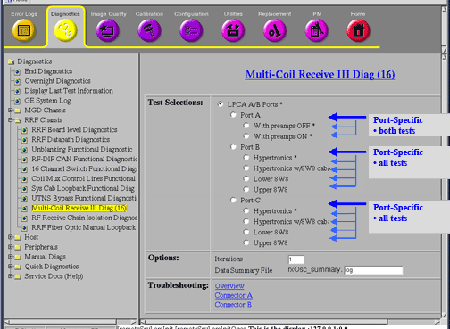

Proprietary to General Electric Company
Direction 5440000, Rev# 5
Module Version 1.0, Version Date 5/15/07
Proprietary to General Electric Company |
| ||||
| Strong Magnetic Field! | ||||
| Ferrous materials can become dangerous projectiles in the presence of the magnetic field Produced by the Signa Magnet. | ||||
| Do not Bring any ferromagnetic tools or equipment into the magnet room. |
| Condition | Reference | Effectivity |
|---|---|---|
System software is loaded and the system is capable of making images. | - | - |
The MCR tool helps isolate failures within the MCR chain. In order to rule out potential failures with the system cabinet or the 16-channel switch, , it is recommended that you begin by running the 16-channel switch diag and the syscab loopback test diag prior to running the MCR tool. | - | - |
Port A's path travels through the hypertronics port, cable path, and the preamps within the Multi-coil Interface Box before going to the 16-channel switch.
In addition to Port A, the MCR tool will test the following cable paths in ports B and C.
Move the platform so the LPCA ports are accessible.
Go to the Service Desktop and start the Common Service Browser if it is not already running.
Click on the [Diagnostics] Tab and then, on the left pane, expand Block View and then RRF Chassis. And then click the [Multi-Coil Receive III Diag (x)] from manual diagnostics link. See Illustration 4.
The default level of tests contains three (3) individual tests (four (4) in 32-channel systems). These tests are identified on the MCR Tool GUI by with an asterisk (see Illustration 5) . Note: To run the default level tests you only need to connect the MCR III tool to the LPCA front connector.
Connect the MCR tool to the A port (see Illustration 3).
Select LPCA A/B/C ports and click [Run].
The MCR tool will complete the tests (marked with an asterisk (*)) in alphabetical order. Once it completes the A port tests a User Query will appear asking you disconnect the MCR tool from the A port and connect to the B port (see Illustration 6. Once you make this change click [Done].
If the MCR tool reports a failure (designated by red text in the results, for example,Illustration 8), see MCR III Chain Tool Troubleshootingfor troubleshooting.
The port-specific tests will automatically run all the individual tests available in that port. Between each test you will be prompted to change the positions of cables that run from the 16-channel switch to the Service Hub. Make changes as instructed. After each test you will have the option to skip the remaining tests.
Connect the MCR tool to the port you wish to test (see Illustration 3).
Select the group of tests you want to run, and then click [Run]. 
With preamps OFF (Port A).
With preamps ON (Port A).
Hypertronics Test (Ports B & C). This test diagnoses the MCR chain path of channels 1-8 (or 17-24 on Port C) between the Coil and the 16-channel switch.
Hypertronics Cable Swap Test (Ports B & C). This test diagnoses the MCR chain path of channels 1-8 (17-24 on Port C) between the Coil and the Service Hub and channels 9-16 (25-32 on Port C) between the Service Hub and the 16-channel switch.
8W8 Bottom Test (Ports B & C). This test diagnoses the MCR chain path of channels 1-8 (17-24 on Port C) from the Service Hub cable onward to the 16-channel switch.
8W8 Top Test (Ports B & C). This test diagnosis the MCR chain path of channels 9-16 (25-32 on Port C) from the Service Hub cable onward to the 16-channel switch.
If the MCR tool reports a failure (designated by red text in the results, for example,Illustration 8), see MCR III Chain Tool Troubleshootingfor troubleshooting.
The individual tests are primarily designed to allow field engineers to hammer a specific portion of the MCR chain.
Connect the MCR tool to the port you wish to test (see Illustration 3).
Select the individual test you want to run.
Hypertronics Test. All cables should remain in their original locations and the MCR tool must be connected directly to the port being tested (see Illustration 3
Hypertronics Cable Swap Test. To perform this test, you must connect the MCR tool directly to the port being tested. Then swap the two lower cables on the Service Hub. See Illustration 10.
8W8 Bottom Test. To perform this test, take the bottom 8-channel connector off the Service Hub and connect it to the MCR tool (see Illustration 12). If a failure occurs, re-run the test with the tool connected on the output side of the Image Reject Filter as diagramed below (see Illustration 17).
8W8 Top Test. To perform this test, take the top 8-channel connector off the Service Hub and connect it to the MCR tool (see Illustration 14). If a failure occurs, re-run the test with the tool connected on the output side of the Image Reject Filter as diagramed below (see Illustration 18).
If the MCR tool reports a failure (designated by red text in the results, for example, Illustration 8), see MCR III Chain Tool Troubleshootingfor troubleshooting.